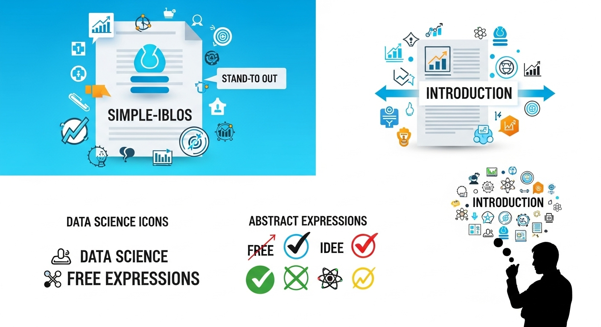
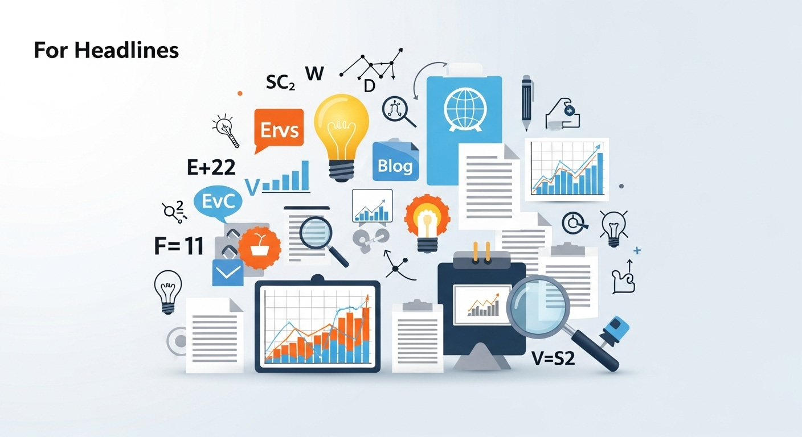
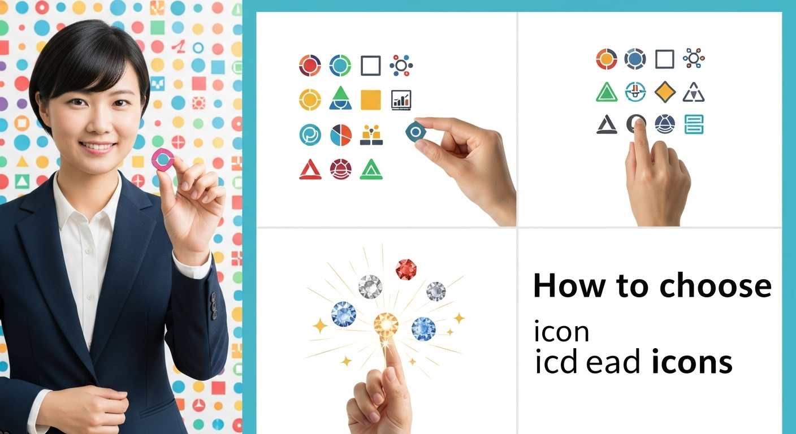
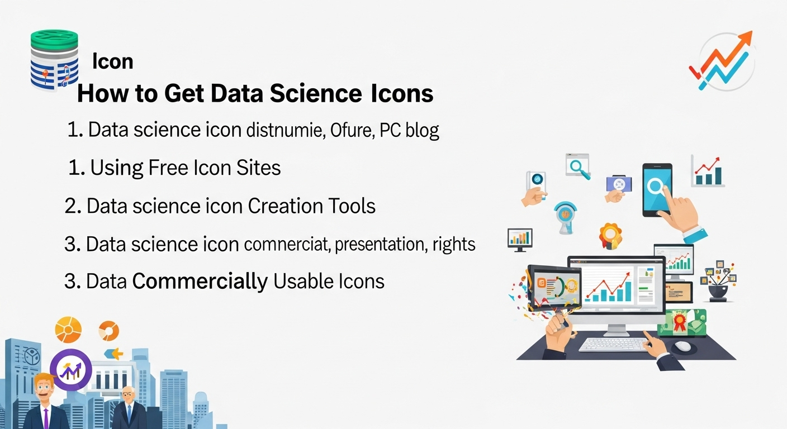
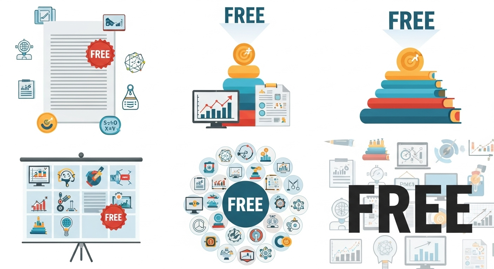
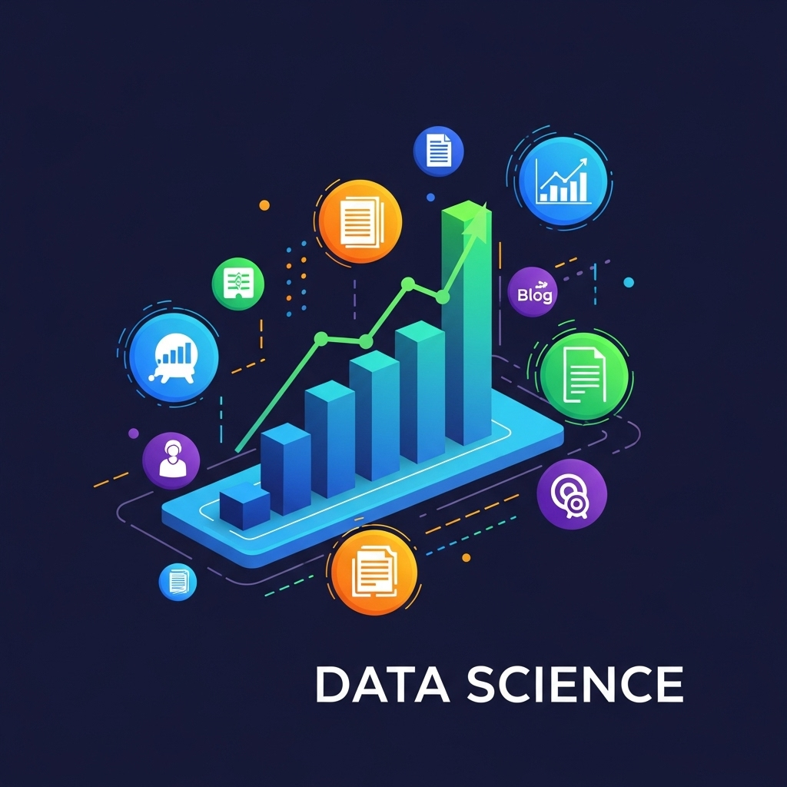
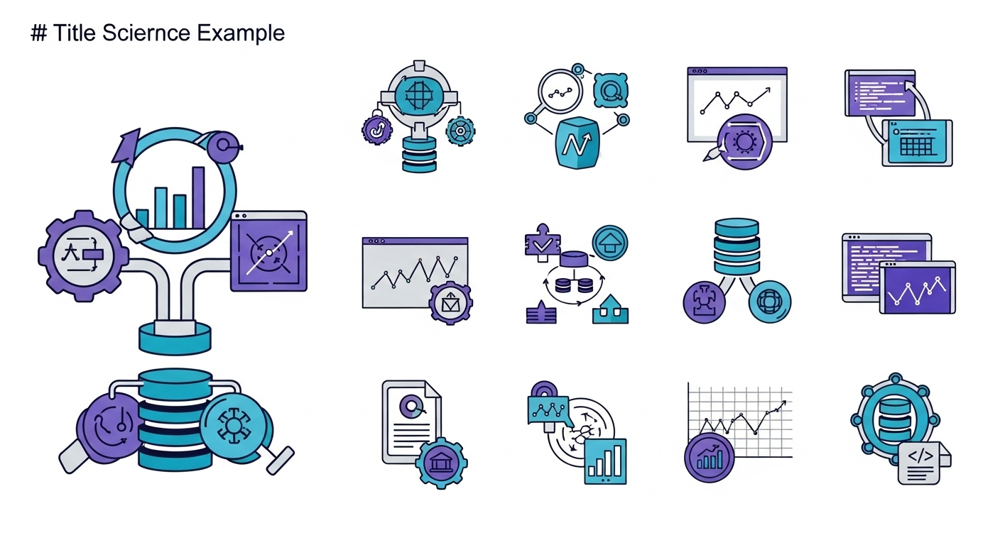

【無料あり】データサイエンスアイコンの選び方と活用術！資料・ブログで差をつける
導入

データサイエンスの世界へようこそ。この分野に足を踏み入れたあなたは、きっと日々、膨大なデータと向き合い、複雑なアルゴリズムを解き明かし、そこから価値ある知見を引き出すという、知的好奇心に満ちた冒険をされていることでしょう。機械学習、統計学、プログラミングといった専門的な知識を駆使して、ビジネス上の課題解決や未来予測に貢献する。そのプロセスは、まさに現代の魔法とも言えるかもしれません。
しかし、その魔法がいかに強力であっても、その価値を他者に伝えられなければ、宝の持ち腐れになってしまうことがあります。あなたが分析から導き出した素晴らしいインサイトも、専門知識のない人にとっては、難解な数式や専門用語の羅列に見えてしまうかもしれません。せっかくの分析結果が、プレゼンテーションの場で「よく分からない」「難しすぎる」という一言で片付けられてしまったら、これほど悲しいことはありませんよね。
データサイエンスの価値を最大化するためには、分析スキルそのものと同じくらい、「伝えるスキル」が重要になります。複雑で抽象的な概念を、いかに直感的で分かりやすく、そして魅力的に伝えられるか。この課題を解決するための強力な武器、それが今回ご紹介する「データサイエンスアイコン」です。
アイコンと聞くと、スマートフォンのアプリやウェブサイトのメニューボタンなど、日常的に目にする小さな絵文字を思い浮かべる方が多いかもしれません。しかし、アイコンが持つ力は、単なる「目印」にとどまりません。一つの小さな絵柄が、千の言葉よりも雄弁に、物事の本質を語りかけることがあります。例えば、「データベース」という言葉を聞いて、円柱が三段に重なったアイコンを思い浮かべる方は多いのではないでしょうか。あるいは、「AI」と聞いて、人間の脳を模した回路のアイコンを連想するかもしれません。
このように、アイコンは複雑な概念を瞬時に、そして直感的に伝える力を持っています。あなたの作成するプレゼンテーション資料、技術ブログ、学習ノートにこれらのアイコンを戦略的に配置することで、コンテンツは劇的に分かりやすく、そしてプロフェッショナルな印象に生まれ変わります。読者や聴衆は、専門用語の壁に阻まれることなく、あなたが伝えたい物語の本質にスムーズにたどり着くことができるでしょう。
この記事では、データサイエンスの世界で「伝える力」を飛躍的に向上させるための、アイコンの選び方と活用術を、基礎から応用まで、丁寧に、そして具体的に解説していきます。
- なぜアイコンを使うべきなのか？ その具体的なメリットを深く掘り下げます。
- 膨大なアイコンの中から何を選べばいいのか？ 目的やコンセプトに合ったアイコンを選ぶための5つの視点をご紹介します。
- どこで質の高いアイコンを手に入れられるのか？ 無料で使える便利なサイトから、プロ品質の有料サイトまで、あなたにぴったりの入手方法を解説します。
- 手に入れたアイコンをどう使えば効果的なのか？ プレゼンテーション、ブログ、学習ノートなど、具体的なシーン別の活用術を伝授します。
特に、この記事では「無料」で利用できるリソースにも焦点を当てています。コストをかけずに、今日からすぐに実践できるノウハウが満載です。データサイエンスの学習を始めたばかりの方も、すでに実務で活躍されている方も、アイコンという小さな巨人の力を借りて、あなたの知識と分析結果を、より多くの人に、より深く届けてみませんか？
さあ、一緒にデータサイエンスアイコンの世界を探求し、あなたの「伝える力」を新たなステージへと引き上げていきましょう。
データサイエンスアイコンを活用するメリット

アイコンを資料やブログに加えることは、単に見た目を華やかにするための「飾り」ではありません。それは、情報をより速く、より正確に、そしてより記憶に残りやすくするための、戦略的なコミュニケーション手法なのです。特に、専門用語が多く、抽象的な概念を扱うデータサイエンスの分野において、アイコンの活用は計り知れないほどのメリットをもたらします。ここでは、その代表的な3つのメリットについて、深く掘り下げていきましょう。
メリット１．視覚的魅力で読者の理解を促進する
私たちの脳は、生まれつきテキストよりもイメージを効率的に処理するようにできています。一説には、脳に伝わる情報の90%は視覚的なものであり、テキスト情報に比べて画像を処理する速度は6万倍も速いと言われています。この人間の認知特性をうまく利用することが、分かりやすいコミュニケーションの鍵となります。
想像してみてください。データ分析のプロジェクトフローを説明するスライドがあったとします。
【テキストのみの場合】
「まず、複数のソースからデータを収集し、データベースに格納します。次に、ETLツールを用いてデータを抽出し、必要な形式に変換・加工した上で、データウェアハウスにロードします。その後、BIツールを使ってデータを可視化し、機械学習モデルを構築して予測分析を行い、最終的なレポートを作成して関係者に共有します。」
この文章だけでも、専門家であれば内容は理解できるでしょう。しかし、一読しただけではプロセス全体の流れを直感的に把握するのは少し難しいかもしれません。特に、データサイエンスに馴染みのない人にとっては、専門用語の連続で、読むこと自体が苦痛に感じられる可能性もあります。
【アイコンを活用した場合】
この一連の流れを、アイコンを使って表現するとどうなるでしょうか。
- データ収集: 雲やサーバーのアイコンから矢印が伸びる
- データベース格納: 円柱が重なったデータベースのアイコン
- ETL処理: 歯車やパイプラインのアイコン
- データウェアハウス: 大きな倉庫や建物のアイコン
- 可視化: 棒グラフや円グラフのアイコン
- 機械学習モデル: 脳と回路が組み合わさったアイコン
- レポート作成: 書類やクリップボードのアイコン
このように、各ステップを象徴するアイコンを配置し、それらを矢印でつなぐだけで、プロセス全体の流れが一目瞭然になります。テキストを読む前に、視覚的に「何かがどこかに流れ、処理され、形を変えていく」という全体像を瞬時に掴むことができるのです。これにより、読者は情報の迷子になることなく、安心して詳細な説明を読み進めることができます。
アイコンは、情報のアンカー（錨）のような役割を果たします。複雑な情報の大海原の中で、読者が現在地を見失わないように導き、重要なポイントを記憶に定着させる手助けをしてくれるのです。視覚的な魅力は、単に「きれい」「かっこいい」という سطح的なものではなく、読者の認知的な負担を軽減し、内容への集中力と理解度を本質的に高めるための、極めて効果的な手段なのです。
メリット２．専門的な概念を分かりやすく表現できる
データサイエンスの世界は、抽象的で難解な専門用語で溢れています。「ビッグデータ」「機械学習」「ディープラーニング」「自然言語処理（NLP）」「ETL」「API連携」…これらの言葉は、私たち専門家にとっては日常的なものですが、一歩分野の外に出れば、多くの人にとっては未知の言葉です。
こうした専門的な概念を言葉だけで説明しようとすると、どうしても説明が長くなったり、さらなる専門用語を使わざるを得なくなったりして、かえって混乱を招いてしまうことがあります。ここでアイコンが、専門家と非専門家の間をつなぐ「共通言語」として機能します。
例えば、「機械学習（Machine Learning）」という概念を考えてみましょう。これをアイコンで表現する場合、どのようなものが考えられるでしょうか。
- 「脳」と「歯車」の組み合わせ: 人間の知能（脳）が、機械的なプロセス（歯車）によって学習・成長していく様子を象徴します。これは非常にポピュラーで、直感的に理解しやすい表現です。
- 「データ」から「電球（ひらめき）」へ: 複数のデータポイント（点や四角形）が、ある種のブラックボックス（モデル）を通過することで、新しい知見（電球）が生まれる様子を描写します。
- 「木」が成長する様子: データという養分を吸収して、予測モデルという木が枝分かれしながら成長していく様子を表現します。これは特に決定木アルゴリズムなどを表現する際に有効です。
このように、一つの概念に対しても、伝えたいニュアンスに応じて様々なアイコン表現が可能です。重要なのは、そのアイコンが概念の本質的な特徴を捉え、比喩としてうまく機能していることです。
「ビッグデータ」であれば、複数のデータベースアイコンがネットワークで繋がっている様子や、巨大なデータの津波のようなイメージで表現できます。「自然言語処理」であれば、人間の吹き出しアイコンと、それを解析するコンピューターのアイコンを組み合わせることで、「人間の言葉を機械が理解する技術」であることを示唆できます。
アイコンを使うことで、聞き手はまず「なんとなくこんな感じのものかな？」という大まかなイメージを掴むことができます。この最初のイメージがあるだけで、その後の詳細な説明に対する理解度が格段に向上します。アイコンは、難解な概念への入り口を優しく開けてくれる、親切な案内人のような存在なのです。これにより、エンジニアとビジネスサイド、あるいは研究者と一般の人々といった、異なる知識レベルを持つ人々の間でのコミュニケーションが円滑になり、プロジェクトの推進や知識の普及に大きく貢献します。
メリット３．ブランドイメージ向上とプロフェッショナルな印象
あなたが作成する資料やブログは、単なる情報伝達のツールであると同時に、あなた自身や、あなたの所属する組織の「顔」でもあります。内容がどれだけ優れていても、見た目が雑然としていたり、素人っぽかったりすると、その内容自体の信頼性まで損なわれてしまう可能性があります。
ここで、統一感のあるアイコンを効果的に使用することが、プロフェッショナルな印象を演出し、ブランドイメージを向上させる上で非常に重要な役割を果たします。
一貫性による信頼性の構築
資料全体で、同じスタイル（例えば、線の太さや色使いが統一されたラインアイコン）のアイコンを使い続けることを想像してみてください。すると、資料全体に視覚的な一貫性が生まれます。この一貫性は、「細部にまでこだわって作られている」「しっかりとデザインされている」という印象を与え、無意識のうちに読み手に対して「この作り手は信頼できる」というメッセージを送ります。逆に、様々なサイトから寄せ集めた、スタイルもテイストもバラバラなアイコンが混在していると、それだけで資料全体が素人っぽく、まとまりのない印象になってしまいます。
ブランディングへの貢献
個人の技術ブログやポートフォリオ、あるいは企業の技術レポートなどで、特定のカラースキームやデザインスタイルのアイコンを継続的に使用することで、それがあなたの「トレードマーク」になります。読者は、「ああ、この青とグレーを基調としたシンプルなアイコンは、〇〇さんのブログだ」と視覚的に認識するようになります。これは、強力なパーソナルブランディング、あるいはコーポレートブランディングに繋がります。人々は、あなたのコンテンツをそのデザインスタイルと結びつけて記憶し、他の数多ある情報の中からあなたの発信を際立たせてくれるのです。
専門性の視覚的アピール
洗練されたデザインのアイコンは、作り手の専門性の高さを雄弁に物語ります。データサイエンスという最先端の分野を扱うにふさわしい、モダンでクリーンなアイコンを選ぶことで、「この人物は、技術的な専門知識だけでなく、それを分かりやすく伝えるデザインセンスも持ち合わせている」という、付加価値の高い評価を得ることができます。これは、転職活動におけるポートフォリオや、フリーランスとしての案件獲得、あるいは社内での評価向上など、様々な場面であなたを有利に導いてくれるでしょう。
アイコンは、あなたの専門知識という「中身」を包む、上質な「パッケージ」です。優れたパッケージは、中身の価値をさらに高め、人々の手に取ってもらいやすくする力を持っています。アイコンを戦略的に活用し、あなたというブランドを、よりプロフェッショナルで信頼性の高いものへと育てていきましょう。
データサイエンスアイコンの選び方

アイコンがもたらすメリットを理解したところで、次に重要になるのが「どのようなアイコンを選べば良いのか？」という問題です。世の中には無数のアイコンが存在しますが、その中から自分の目的やコンテンツに最適なものを見つけ出すには、いくつかの指針が必要です。ここでは、データサイエンスの文脈で効果的なアイコンを選ぶための、5つの重要なポイントを詳しく解説します。これらのポイントを意識することで、あなたの資料は格段に洗練され、伝わりやすいものになるはずです。
選び方１．統一感のあるデザインを選ぶ
アイコンを選ぶ上で最も重要と言っても過言ではないのが、「統一感」です。資料やウェブサイト全体で使用するアイコンのデザインスタイルに一貫性を持たせることで、視覚的なノイズが減り、プロフェッショナルで洗練された印象を与えることができます。逆に、テイストがバラバラのアイコンが混在していると、それだけで全体が雑然として見え、読み手の集中力を削いでしまいます。
統一感を出すために意識すべき要素は、主に以下の4つです。
- スタイル（Style）:
- ラインアイコン（Line/Outline）: 線だけで描かれた、シンプルでモダンな印象のアイコンです。背景に馴染みやすく、多くのデザインに合わせやすいのが特徴です。
- フィルアイコン（Fill/Solid）: 内側が塗りつぶされたアイコンです。視認性が高く、力強い印象を与えます。
- フラットアイコン（Flat）: 影やグラデーションを使わない、平面的でシンプルなデザインです。現代的なウェブデザインで広く採用されています。
- 3Dアイコン / クレイモーフィズム: 粘土のような質感や立体感を持つ、比較的新しいスタイルのアイコンです。親しみやすく、柔らかな印象を与えます。
- 手書き風アイコン: 温かみやオリジナリティを演出したい場合に適しています。
これらのスタイルを混ぜて使うのは避けましょう。「データベース」はラインアイコンなのに、「サーバー」はフィルアイコン、というような状態は視覚的な不協和音を生み出します。一つの資料では、一つのスタイルに統一するのが原則です。
- 線の太さ（Stroke Width）:
ラインアイコンを選ぶ際には、線の太さが非常に重要です。繊細で細い線のアイコンと、太く力強い線のアイコンが混在すると、統一感が損なわれます。使用するアイコンすべての線の太さが、おおよそ同じになるように意識しましょう。
- 角の丸み（Corner Radius）:
アイコンの角がシャープ（角丸なし）か、丸みを帯びているか（角丸あり）も、全体の印象を大きく左右します。シャープな角は堅実でプロフェッショナルな印象を、丸みを帯びた角は親しみやすく優しい印象を与えます。これも、どちらかのスタイルに統一することが望ましいです。
- カラースキーム（Color Scheme）:
アイコンに色を付ける場合は、あらかじめ決めておいたブランドカラーやテーマカラーに沿って配色しましょう。例えば、メインカラーを青、アクセントカラーをオレンジと決めたら、そのカラースキームの範囲内でアイコンの色を統一します。無計画に様々な色を使うと、まとまりがなく、幼稚な印象を与えてしまいます。
実践的なアドバイス:
これらの統一感を最も簡単かつ確実に実現する方法は、「アイコンセット」として提供されているものを利用することです。アイコンセットは、同じデザイナーが同じデザインルールに基づいて制作したアイコンの集まりなので、初めからスタイル、線の太さ、角の丸みなどが完璧に統一されています。多くのアイコンサイトでは、セット単位でアイコンを探したりダウンロードしたりできるので、積極的に活用しましょう。
選び方２．視認性の高いシンプルなアイコン
アイコンは、一瞬でその意味が伝わらなければなりません。そのためには、デザインがシンプルで、視認性が高いことが不可欠です。特に、プレゼンテーション資料のように、スクリーンに投影して少し離れた場所から見る場合や、スマートフォンのような小さな画面で見る場合には、この点がより重要になります。
視認性の高いシンプルなアイコンを選ぶためのチェックポイントは以下の通りです。
- 複雑すぎないか？:
アイコンに込められたディテールが多すぎると、かえって何を表しているのか分かりにくくなります。例えば、「データ分析」を表すのに、虫眼鏡、グラフ、書類、人物のシルエットがすべて詰め込まれたような複雑なアイコンは、小さく表示すると何が何だか分からなくなってしまいます。それよりも、虫眼鏡と棒グラフだけを組み合わせたような、よりシンプルなデザインの方が意図が伝わりやすくなります。アイコンは、伝えたい概念の「本質」を抽出し、最小限の要素で表現する芸術だと考えましょう。
- 小さいサイズでも潰れないか？:
選んだアイコンを、実際に使用する最小サイズ（例えば、箇条書きのリストの先頭につけるサイズ）まで縮小してみてください。その状態でも、線が潰れたり、ディテールが失われたりして、何の絵か判別できなくならないかを確認します。特に、線が細すぎたり、要素間の間隔が狭すぎたりするアイコンは、縮小した際に潰れやすいので注意が必要です。
- シルエットで認識できるか？:
優れたアイコンは、色や細かいディテールがなくても、その形（シルエット）だけで何を意味しているかがある程度分かります。アイコンを白黒にしたり、塗りつぶしたりしても意味が通じるかどうかを考えてみましょう。これがクリアできれば、そのアイコンは非常に強力な視覚記号であると言えます。
- 一目で理解できるか？:
アイコンを見て、その意味を理解するのに数秒も考える必要があるなら、それは良いアイコンとは言えません。理想は、0.5秒以内に「あ、これは〇〇のことだな」と直感的に理解できることです。選んだアイコンを、そのテーマに詳しくない友人や同僚に見せて、何に見えるか尋ねてみるのも良いテスト方法です。
シンプルさは、しばしば洗練さと同義です。余計な装飾を削ぎ落とし、本質だけを残したアイコンは、美しく、力強く、そして何よりも「伝わる」のです。
選び方３．表現したい概念と合致しているか
アイコンは、単なる絵ではなく、特定の意味を持つ「記号」です。したがって、そのアイコンが持つ象徴的な意味（メタファー）と、あなたが表現したいデータサイエンスの概念が、きちんと合致している必要があります。この結びつきが弱いと、読者に誤解を与えたり、混乱させたりする原因となります。
例えば、「データクレンジング（Data Cleansing）」という概念を表現したいとします。これは、データの中からノイズや誤り、欠損値などを取り除き、きれいに整える作業のことです。この概念に合致するアイコンはどのようなものでしょうか？
- 良い例:
- ほうきやブラシのアイコン: 「掃除する」「きれいにする」というメタファーが、データクレンジングの本質と直結しており、非常に分かりやすいです。
- スポイトやフィルターのアイコン: データの中から不要なものを取り除く、あるいは必要なものだけを抽出するというニュアンスをうまく表現しています。
- 汚れたデータがきれいなデータに変わる様子を描いたアイコン: Before/Afterを一つのアイコンで示すことで、プロセスそのものを表現できます。
- あまり良くない例:
- データベースのアイコン: データクレンジングはデータに対して行う作業ですが、このアイコンだけでは「きれいにする」というニュアンスが全く伝わりません。
- 歯車のアイコン: 「処理」や「プロセス」を意味しますが、具体的に何をしているのかが不明確です。ETLプロセス全体を表すなら適切かもしれませんが、クレンジングという特定の工程には不十分です。
このように、アイコンを選ぶ際には、「このアイコンの持つメタファーは、本当に伝えたい概念の核心を突いているだろうか？」と自問自答することが重要です。
また、文化的背景による解釈の違いにも注意が必要です。例えば、フクロウのアイコンは、西洋文化では「知恵」の象徴としてポジティブに捉えられますが、一部の文化では不吉な象徴とされることがあります。グローバルな聴衆を対象とする場合は、できるだけ普遍的に理解される、文化依存度の低いメタファー（例：虫眼鏡＝調査、グラフ＝分析、電球＝アイデア）を選ぶのが安全です。
データサイエンスの各概念（例：教師あり学習、クラスタリング、特徴量エンジニアリングなど）に対して、どのようなアイコンが最も的確なメタファーとなるかを考え、自分なりの「アイコン辞書」を作っておくのも、効率的に質の高い資料を作成するための良い習慣です。
選び方４．汎用性と拡張性も考慮する
一度アイコンのスタイルを決めたら、それはあなたの資料やブログの「デザインシステム」の一部となります。したがって、その場限りで使うアイコンを選ぶのではなく、将来的なコンテンツ展開も見据えて、汎用性と拡張性の高いものを選ぶことが賢明です。
汎用性:
選んだアイコンセットが、データサイエンスの幅広いトピックをカバーできるだけのバリエーションを持っているかを確認しましょう。今は「データベース」と「サーバー」のアイコンしか必要ないかもしれません。しかし、将来的には「A/Bテスト」「API」「セキュリティ」「クラウドコンピューティング」といった、より多様な概念を表現する必要が出てくるかもしれません。その時に、同じデザインスタイルのアイコンがちゃんと用意されているか、あるいは簡単に追加作成できそうかを考えておく必要があります。基本的なビジネスアイコンやテクノロジーアイコンが豊富に揃っているアイコンセットは、汎用性が高いと言えます。
拡張性:
拡張性とは、主にアイコンのファイル形式と編集のしやすさに関わる問題です。アイコンを選ぶ際には、できるだけSVG（Scalable Vector Graphics）形式で提供されているものを選びましょう。
- SVG形式のメリット:
- スケーラビリティ: SVGはベクター形式なので、どれだけ拡大・縮小しても画質が劣化しません。プレゼンテーションの大きなタイトル横で使ったり、ウェブサイトの小さなファビコンで使ったりと、様々なサイズで使い回すことができます。PNGやJPGのようなラスター形式は、拡大すると画像が荒れてしまうため、用途が限られます。
- 編集可能性: SVGファイルは、コード（XML）で記述された図形データです。そのため、IllustratorやFigmaのようなデザインツールを使えば、線の太さ、色、形などを後から簡単に編集できます。例えば、ダウンロードした黒いアイコンを、自分のブランドカラーである青色に変更するといったカスタマイズが容易に行えます。これにより、既存のアイコンを自分のデザインシステムに完璧に適合させることができます。
汎用性と拡張性の高いアイコンを選ぶことは、長期的な視点でのデザインの一貫性を保ち、将来のコンテンツ制作の手間を大幅に削減するための、賢い投資と言えるでしょう。
選び方５．ライセンスと著作権の確認
最後にして、絶対に見過ごしてはならないのが、ライセンスと著作権の確認です。特に、無料で提供されているアイコンを利用する際には、その利用規約を細心の注意を払って読む必要があります。これを怠ると、意図せず著作権侵害を犯してしまい、トラブルに発展する可能性があります。
確認すべき主なポイントは以下の通りです。
- 商用利用の可否（Commercial Use）:
あなたのブログに広告を掲載している場合、企業のプレゼンテーション資料で使う場合、あるいは有料のセミナーで配布する資料に使う場合などは、すべて「商用利用」に該当する可能性があります。「個人利用は無料でも、商用利用は有料または禁止」というケースは非常に多いので、必ず確認しましょう。
- クレジット表記の要不要（Attribution）:
「無料で使って良いけれど、作者名やサイト名を記載してください」という条件が付いていることがあります。これを「クレジット表記」や「帰属表示」と言います。表記が必要な場合は、資料の最後やウェブサイトのフッターなどに、指定された形式で正しく記載する必要があります。クレジット表記が不要なアイコンは、より自由に使いやすいと言えます。
- 改変の可否（Modification/Derivative Works）:
ダウンロードしたアイコンの色を変えたり、形を一部変更したり、他のアイコンと組み合わせたりといった「改変」が許可されているかどうかも重要なポイントです。自由にカスタマイズしたい場合は、改変が許可されているライセンスのものを選ぶ必要があります。
代表的なライセンスの種類:
- パブリックドメイン（Public Domain / CC0）: 最も自由なライセンスです。著作権が放棄されており、クレジット表記不要で、商用利用も改変も自由に行えます。
- クリエイティブ・コモンズ（Creative Commons）:
- 表示（BY）: クレジット表記が必要です。
- 非営利（NC）: 商用利用が禁止されています。
- 改変禁止（ND）: 改変が禁止されています。
- これらの条件が組み合わさったライセンス（例：CC BY-NC）も存在します。
アイコンをダウンロードするサイトには、必ず「ライセンス」「利用規約」「Terms of Use」といったページがあります。アイコンを使う前に必ず目を通し、そのルールを遵守してください。もし規約が不明確で判断に迷う場合は、そのアイコンの使用を避けるのが最も安全な選択です。ライセンスの確認は、面倒に感じるかもしれませんが、あなた自身を法的なリスクから守り、クリエイターの権利を尊重するための、非常に重要なプロセスなのです。
データサイエンスアイコンの入手方法

さて、アイコン選びのポイントが分かったところで、次はいよいよ「どこで、どうやって質の高いアイコンを手に入れるか」という実践的なステップに進みましょう。幸いなことに、現代では多種多様な方法でアイコンを入手することができます。ここでは、それぞれの特徴やメリット・デメリットを踏まえながら、代表的な3つの入手方法をご紹介します。あなたの目的や予算、スキルに合わせて、最適な方法を選んでみてください。
方法１．無料で高品質なアイコンサイトを活用する
「無料で使えるアイコン」と聞くと、品質が低かったり、デザインが古かったりするのではないかと心配になる方もいるかもしれません。しかし、現在では、プロのデザイナーが作成したような高品質でモダンなアイコンを、無料で提供している素晴らしいウェブサイトがたくさん存在します。特に、個人での学習や情報発信、予算が限られているプロジェクトなどでは、これらのサイトが非常に強力な味方になります。
ここでは、データサイエンティストにとっても使いやすい、おすすめの無料アイコンサイトをいくつかご紹介します。
1. ICOOON MONO
- 特徴: 日本のサイトで、シンプルで使いやすいモノクロのアイコンが豊富に揃っています。商用利用可能、クレジット表記不要、改変も自由と、非常に寛大なライセンスが魅力です。
- データサイエンスでの活用: ビジネスやテクノロジー関連の基本的なアイコンが一通り揃っているため、「グラフ」「サーバー」「データベース」「歯車」といった汎用的なアイコンを探すのに非常に便利です。SVG形式でのダウンロードも可能なので、後から色をつけたりカスタマイズしたりすることも容易です。サイトのインターフェースも日本語で分かりやすく、初心者の方でも安心して利用できます。
2. unDraw
- 特徴: アイコンそのものではなく、人物やオブジェクトが描かれたお洒落な「イラストレーション」を無料で提供しているサイトです。最大の特徴は、サイト上でメインカラーを自由に変更できること。あなたのブランドカラーや資料のテーマカラーに合わせたイラストを、ワンクリックで生成できます。
- データサイエンスでの活用: データ分析をしている人物、チームで議論している様子、プレゼンテーションをしているシーンなど、抽象的な概念や状況を表現するのに最適です。資料の扉ページやセクションの区切りに使うことで、ぐっとプロフェッショナルでストーリー性のある見た目になります。ライセンスも非常に緩やかで、クレジット表記不要で商用利用も可能です。
3. Material Symbols and Icons (Google)
- 特徴: Googleが提供している公式のアイコンセットです。シンプルで洗練されたデザインは、どんな資料にも馴染みやすく、視認性も抜群です。線の太さや塗りつゆし（Fill）、太さ（Weight）、傾き（Grade）などを細かくカスタマイズしてダウンロードできるのが大きな強みです。
- データサイエンスでの活用: 「analytics」「database」「cloud」「api」「model_training」など、テクノロジーやデータサイエンスに関連するアイコンが非常に豊富です。Googleが提唱するマテリアルデザインに準拠しているため、モダンで信頼感のある印象を与えたい場合に最適です。Apache License 2.0のもとで提供されており、商用利用も可能です。
4. Flaticon (無料プラン)
- 特徴: 世界最大級のアイコンデータベースサイトです。数百万点以上の膨大なアイコンが登録されており、ありとあらゆるテーマのアイコンを見つけることができます。
- データサイエンスでの活用: 「machine learning」「big data」「python」といった具体的なキーワードで検索しても、多数の高品質なアイコンがヒットします。様々なデザイナーが作成した多様なスタイルのアイコンが揃っているため、自分の好みに合ったものを見つけやすいでしょう。
- 注意点: 無料プランで利用する場合、クレジット表記が必須となります。また、ダウンロードできる形式がPNGに限られるなど、一部機能に制限があります。クレジット表記の手間を省きたい場合や、SVG形式でダウンロードしたい場合は、後述する有料プランへの加入を検討する必要があります。
これらの無料サイトを活用するだけでも、資料やブログのクオリティを大幅に向上させることが可能です。まずはこれらのサイトをブックマークし、どのようなアイコンがあるのかを眺めてみることから始めてみてはいかがでしょうか。
方法２．有料で豊富な選択肢を持つアイコンサイトを利用する
無料サイトでも十分に高品質なアイコンは手に入りますが、より高いレベルの品質、オリジナリティ、そして利便性を求めるのであれば、有料のアイコンサイトを利用するという選択肢があります。特に、企業の公式な資料や、ブランディングを重視するプロジェクト、頻繁にコンテンツを作成する方にとっては、有料サービスへの投資は十分に価値のあるものとなるでしょう。
有料サイトを利用する主なメリットは以下の通りです。
- 圧倒的な品質と品揃え: 有料サイトのアイコンは、プロのデザイナーによって厳選された、非常に高品質なものが揃っています。また、無料サイトでは見つかりにくい、ニッチで専門的なテーマのアイコンも豊富に用意されています。
- 統一されたアイコンセット: デザインスタイルが完璧に統一された、数十〜数百個のアイコンがセットになった「アイコンパック」が多数提供されています。これにより、デザインの一貫性を保つのが非常に容易になります。
- 明確で安心なライセンス: 料金を支払うことで、商用利用や改変に関する権利が明確に保証されます。クレジット表記も不要になるケースがほとんどで、ライセンスに関する不安や手間から解放されます。
- 高度なカスタマイズ機能: サイト上でアイコンの色やスタイルを編集できる機能が提供されていることも多く、デザインツールがない人でも簡単にカスタマイズが可能です。
代表的な有料アイコンサイトをいくつかご紹介します。
1. Flaticon (有料プラン)
- 特徴: 前述のFlaticonのプレミアムプランです。月額または年額の料金を支払うことで、クレジット表記が不要になり、すべてのアイコンをSVGやEPSといったベクター形式で無制限にダウンロードできるようになります。膨大なデータベースをストレスなく最大限に活用できるのが魅力です。
- どんな人におすすめか: 多様なスタイルのアイコンを、頻繁に、かつ商用で利用したい方。特定のアイコンを探す手間を最小限にしたい方。
2. The Noun Project
- 特徴: 「世界のビジュアル言語を創造する」というミッションを掲げる、非常に有名なアイコンサイトです。シンプルで象徴的な、質の高いモノクロアイコンが数百万点以上登録されています。
- どんな人におすすめか: 洗練されたシンボリックなアイコンを好む方。資料の統一感を重視し、一貫したモノクロスタイルでまとめたい方。有料プラン（NounPro）に加入すれば、クレジット表記不要で、アイコンの色や背景をサイト上で簡単にカスタマイズできます。
3. Envato Elements
- 特徴: アイコン専門サイトではなく、アイコン、ストックフォト、動画素材、フォント、プレゼンテーションテンプレートなど、あらゆるクリエイティブ素材が月額定額制で使い放題になるサービスです。
- どんな人におすすめか: アイコンだけでなく、資料やブログで使用する様々なデザイン素材をまとめて手に入れたい方。コストパフォーマンスを重視する方。データサイエンスのプレゼンテンプレートなども見つかるため、資料作成全体を効率化したい場合に非常に強力です。
有料サイトは、初期投資は必要ですが、長期的に見れば時間と手間の節約になり、コンテンツの品質を安定して高く保つための確実な方法と言えるでしょう。
方法３．デザインツール内蔵のアイコン機能を活用する
アイコンを入手するためのもう一つの便利な方法が、私たちが普段から使っているプレゼンテーションソフトやデザインツールに内蔵されているアイコン機能を活用することです。専用のサイトにアクセスしてアイコンを探し、ダウンロードして、資料に挿入する…という手間を省き、ツール内でシームレスに作業を完結できるのが最大のメリットです。
1. Microsoft PowerPoint / Word / Excel
- 特徴: Microsoft 365のサブスクリプションを利用している場合、PowerPointなどのOfficeアプリ内で「アイコン」機能を使うことができます。数千種類のシンプルで使いやすいアイコンがカテゴリ別に整理されており、クリック一つでスライドに挿入できます。
- 活用術: 挿入したアイコンは、図形として扱われるため、色の変更、枠線の追加、サイズ変更などを自由に行うことができます。PowerPointのテーマカラーに合わせて自動的に色が変わるため、資料全体の統一感を保つのも簡単です。データサイエンス関連のアイコンも「テクノロジと電子機器」「分析」などのカテゴリに多数含まれています。
2. Canva
- 特徴: オンラインで使えるデザインツールとして非常に人気のCanvaには、膨大な数のグラフィック素材（アイコン、イラスト、写真など）が内蔵されています。無料プランでも多くの素材を利用できますが、有料のCanva Proに加入すると、利用できる素材の数が飛躍的に増えます。
- 活用術: ドラッグ＆ドロップの簡単な操作で、プレゼンテーションやブログのアイキャッチ画像、SNS投稿画像などを作成できます。アイコンの色も自由にカスタマイズ可能で、デザインの知識がなくても直感的に見栄えの良い資料を作れるのが魅力です。
3. Google Slides / Docs
- 特徴: Googleのオフィススイートには、直接的なアイコン挿入機能は標準で備わっていません。しかし、「アドオン」を追加することで機能を拡張できます。例えば、「Icons for Slides & Docs」といったアドオンをインストールすれば、Flaticonなどが提供するアイコンをGoogle Slides内から直接検索・挿入できるようになります。
- 活用術: 普段からGoogle Workspaceをメインで使っている方にとっては、アドオンの活用が作業効率を上げる鍵となります。
これらのツール内蔵機能は、手軽さと作業のスピードを重視する場合に最適な選択肢です。ただし、提供されているアイコンの種類やデザインの独自性という点では、専門のアイコンサイトに劣る場合もあります。作りたい資料の目的や求められるクオリティに応じて、専門サイトとツール内蔵機能をうまく使い分けるのが賢い方法と言えるでしょう。
無料アイコンのメリット

有料のサービスには確かに魅力的な点が多くありますが、だからといって無料のアイコンが劣っているわけではありません。むしろ、特に多くのデータサイエンティストにとって、無料アイコンは計り知れないほどの恩恵をもたらしてくれます。コストという直接的な障壁を取り除くだけでなく、学習や発信といった活動そのものを後押ししてくれる、心強い味方なのです。ここでは、無料アイコンが持つ3つの大きなメリットについて、その価値を再確認していきましょう。
メリット１．コストを抑えて資料を作成できる
これは最も直接的で、そして最も大きなメリットと言えるでしょう。質の高いアウトプットを出すために、必ずしも高価なツールや素材が必要なわけではありません。特に、以下のような立場の方々にとって、無料で高品質なアイコンが手に入ることは、活動の可能性を大きく広げることに繋がります。
- 学生・学習者: データサイエンスを学び始めたばかりの学生や社会人にとって、学習コストはできるだけ抑えたいものです。教科書代やオンライン講座の費用、PCのスペックアップなど、何かと物入りな中で、資料作成のための素材にまでコストをかけるのは難しい場合が多いでしょう。無料アイコンを使えば、金銭的な負担なく、学習の成果をまとめたレポートや、勉強会での発表資料を、プロフェッショナルな見た目に仕上げることができます。
- 個人の情報発信者: 技術ブログやSNSで知識をシェアしているエンジニアにとって、コンテンツ作成は収益に直結しない「持ち出し」の活動であることも少なくありません。無料アイコンは、コストゼロで記事のクオリティを高め、読者の満足度を向上させるための強力な武器となります。これにより、マネタイズを急ぐことなく、純粋な知的好奇心や貢献意欲に基づいた、質の高い情報発信を継続しやすくなります。
- スタートアップや小規模チーム: 予算が限られている初期段階のスタートアップや、社内の小さなプロジェクトチームにとって、経費削減は常に重要な課題です。顧客への提案資料や、社内向けの報告書、サービス紹介のウェブサイトなど、様々な場面で必要となるデザイン素材を無料で調達できることは、事業の立ち上げや運営において大きな助けとなります。
浮いたコストは、他のより重要な部分、例えば専門書の購入、高性能な計算環境の利用、有料のデータセットへのアクセスなどに再投資することができます。無料アイコンは、限られたリソースを賢く配分し、データサイエンティストとしての本質的な活動に集中させてくれる、経済的にも戦略的にも優れた選択肢なのです。
メリット２．手軽に始められる学習・発信活動
新しいことを始めるとき、私たちはしばしば「完璧主義」の罠に陥りがちです。「もっとしっかり勉強してからブログを書こう」「デザインが完璧になるまで資料は公開できない」…そうこうしているうちに、行動へのハードルがどんどん高くなり、結局何も始められずに終わってしまう、という経験は誰にでもあるのではないでしょうか。
無料アイコンは、この「最初の一歩」を踏み出すための心理的なハードルを劇的に下げてくれます。
「とりあえずやってみる」を後押しする
アイコンを探すために、有料サイトに登録して、クレジットカード情報を入力して…といった手間は一切不要です。ブラウザで無料アイコンサイトを開き、キーワードで検索し、気に入ったものをダウンロードする。たったこれだけの手順で、あなたの資料は見違えるように分かりやすくなります。「デザインに凝る」というタスクを、「無料アイコンを探して配置する」という具体的で簡単なアクションに置き換えることで、「まずは中身を完成させて、見た目は後からアイコンで整えよう」という気軽な気持ちでコンテンツ制作に取り組むことができるのです。
アウトプットの習慣化を助ける
データサイエンスのスキルを定着させる最も効果的な方法の一つは、学んだことを自分の言葉で整理し、他者に説明すること、つまり「アウトプット」することです。学習ノートをまとめたり、ブログ記事を書いたり、勉強会で発表したりといった活動は、知識の定着に絶大な効果を発揮します。
無料アイコンは、このアウトプット活動を楽しく、そして継続しやすくしてくれます。テキストばかりの無味乾燥なノートも、アイコンを加えるだけでカラフルで構造化された見やすいものに変わります。自分の作った資料が見栄え良くなっていく過程は、それ自体がモチベーションとなり、「次もまた作ろう」という意欲を掻き立ててくれるのです。この小さな成功体験の積み重ねが、学習と発信の好循環を生み出し、あなたの成長を加速させます。
つまり、無料アイコンは単なるデザイン素材ではなく、学習者が行動を起こし、それを継続するための「触媒」のような役割を果たしてくれるのです。
メリット３．多様なデザインを試せる自由度
有料の素材は、一度購入すると「せっかくだからこれを使わないと勿体無い」という心理が働き、かえってデザインの選択肢を狭めてしまうことがあります。一方で、無料アイコンにはその縛りがありません。費用を一切気にすることなく、心ゆくまで様々なデザインスタイルを試すことができる。これは、自分自身のデザインセンスを磨き、コンテンツに最適な表現方法を見つけ出す上で、非常に大きなメリットとなります。
自分のスタイルを見つける旅
「自分のブログには、温かみのある手書き風アイコンが合うだろうか？」「それとも、シャープでモダンなラインアイコンの方が専門的に見えるだろうか？」「色はモノクロが良いか、それともブランドカラーの青を基調にすべきか？」
無料アイコンを使えば、こうした試行錯誤をコストゼロで行うことができます。複数の無料サイトから様々なスタイルのアイコンをダウンロードし、実際に自分の資料やブログに当てはめてみる。そうすることで、頭で考えているだけでは分からなかった、自分のコンテンツと最も相性の良いデザインテイストが、感覚的に理解できるようになります。このプロセスを通じて、あなただけのオリジナルな「スタイル」が確立されていくのです。
コンテンツに合わせた最適な表現の追求
例えば、初心者向けの優しい解説記事では、丸みを帯びた親しみやすいアイコンを選び、上級者向けの専門的な技術レポートでは、精密でシャープな印象のアイコンを選ぶ、といったように、コンテンツのターゲットやトーンに合わせてデザインを柔軟に変えることも可能です。
また、A/Bテストのように、同じ内容を異なるデザインのアイコンで表現し、どちらがより読者の反応が良いか（例えば、SNSでのエンゲージメント率や、記事の読了率など）を比較検討することもできます。こうした実験的な試みを手軽に行える自由度は、無料アイコンならではの大きな魅力です。
この「試せる自由」は、あなたのクリエイティビティを解放し、ありきたりな表現に留まらない、より伝わる、より魅力的なコンテンツを生み出すための土壌となってくれるでしょう。
無料アイコンのデメリットと注意点

これまで無料アイコンが持つ数々のメリットについてお話ししてきましたが、物事には必ず光と影があるように、無料であることの裏返しとして、いくつかのデメリットや注意すべき点も存在します。これらの注意点を事前に理解し、適切に対処することで、無料アイコンをより安全かつ効果的に活用することができます。ここでは、知っておくべき3つのポイントについて、具体的な対策とともに詳しく解説していきます。
デメリット１．デザインの選択肢が限られる場合がある
無料アイコンサイトは非常に充実してきていますが、それでもやはり、有料サイトの圧倒的な物量と比較すると、特定のテーマにおいては選択肢が限られてしまう場合があります。
ニッチなテーマのアイコンが見つかりにくい
「データベース」や「サーバー」といった一般的なテクノロジーアイコンは、ほとんどの無料サイトで簡単に見つかります。しかし、例えば「敵対的生成ネットワーク（GAN）」や「LightGBMアルゴリズム」「M-Pesaの決済フロー」といった、より専門的でニッチな概念を的確に表現するアイコンとなると、無料サイトではなかなか見つからないかもしれません。有料サイトでは、こうした専門分野に特化したアイコンパックが提供されていることもありますが、無料の場合は自分で工夫する必要が出てきます。
他のユーザーとデザインが被りやすい
多くの人が利用する人気の無料アイコンは、当然ながら、他の多くの資料やウェブサイトでも目にすることになります。あなたのプレゼンテーションで使ったアイコンが、直前の発表者のスライドにも登場していた、という気まずい状況も起こり得るかもしれません。特に、オリジナリティや独自性を強く打ち出したい場合には、広く使われている無料アイコンだけでは物足りなさを感じる可能性があります。
【対策】
- 複数のサイトを組み合わせる: 一つのサイトで見つからなくても、別のサイトを探せばイメージに近いものが見つかることがあります。複数の無料アイコンサイトをブックマークしておき、横断的に検索する習慣をつけましょう。
- 既存のアイコンを組み合わせて表現する: ニッチな概念を表現したい場合、単一のアイコンに頼るのではなく、複数のシンプルなアイコンを組み合わせて、図解のように表現するという方法があります。例えば、「GAN」であれば、「生成する（工場のアイコン）」と「判別する（天秤のアイコン）」が競い合うような図を作ることで、その概念を視覚的に説明できます。
- 簡単なカスタマイズで差別化する: SVG形式でダウンロードできるアイコンであれば、色を自分のブランドカラーに変えるだけでも、オリジナリティが出ます。他のアイコンと少しだけ色味や線の太さを変えるといった、簡単な一手間を加えることで、「どこかで見たアイコン」という印象を和らげることができます。
デメリット２．ライセンス規約が複雑な場合も
「無料」という言葉は魅力的ですが、それは必ずしも「何をしても自由」という意味ではありません。むしろ、無料の素材ほど、その利用条件であるライセンス規約を慎重に確認する必要があります。この確認を怠ると、意図せず著作権を侵害してしまい、後々大きなトラブルに発展するリスクがあります。
サイトごと、アイコンごとに規約が異なる
あるサイトでは商用利用が完全に自由でも、別のサイトでは非営利目的に限定されている、というように、ライセンスは提供元によって様々です。さらに、同じサイト内でも、特定のデザイナーが作成したアイコンだけはクレジット表記が必要、といったように、アイコンごとに個別のルールが設定されている場合もあります。これらの規約は、英語で長々と書かれていることも多く、正確に理解するのが難しいと感じることもあるでしょう。
クレジット表記の具体的な方法が分かりにくい
クレジット表記が必要な場合、「どこに」「どのように」記載すれば良いのかが明確に示されていないこともあります。「作者名とサイトへのリンクを記載」とだけ書かれていても、プレゼンテーション資料の場合は最終ページにまとめて記載すれば良いのか、各スライドに記載する必要があるのか、判断に迷うことがあります。
「無料」の定義が曖昧なケース
「個人利用は無料」とされていても、その「個人利用」の範囲がどこまでなのかが曖昧な場合があります。例えば、個人の技術ブログでも、アフィリエイト広告を貼っていれば商用利用と見なされる可能性があります。自分の利用目的が、規約のどのケースに該当するのかを慎重に判断する必要があります。
【対策】
- ライセンスページを必ず読む習慣をつける: アイコンをダウンロードする前に、必ずサイトの「ライセンス」「利用規約（Terms of Use/License）」といったページに目を通しましょう。面倒でも、この一手間があなたをリスクから守ります。
- 商用利用可能・クレジット表記不要のサイトを優先的に使う: ライセンスの判断に自信がない場合や、手間を省きたい場合は、前述の「ICOOON MONO」のように、ライセンスがシンプルで分かりやすく、かつ寛容なサイトを優先的に利用するのが最も安全で効率的です。
- 迷ったら使わない、または問い合わせる: 利用規約を読んでも解釈に迷う場合は、そのアイコンの使用を避けるのが賢明です。あるいは、サイトの運営者に問い合わせて、利用目的を伝えた上で許可を取るという方法もあります。
- 利用したアイコンの出典を記録しておく: どのサイトからどのアイコンをダウンロードしたか、そしてその際のライセンスはどうだったかを、メモ帳やスプレッドシートに記録しておく習慣をつけると、後から確認が必要になった際に非常に役立ちます。
デメリット３．高度なカスタマイズが難しい
無料アイコンは、デザインの一貫性を保ち、オリジナリティを出すために、ある程度のカスタマイズ（色の変更など）が推奨されます。しかし、そのカスタマイズの自由度が、提供されるファイル形式によって大きく左右されるというデメリットがあります。
PNG/JPG形式では編集が困難
無料アイコンサイトの中には、PNGやJPGといったラスター形式の画像でしかアイコンを提供していない場合があります。これらの形式は、背景が透過されていなかったり（JPGの場合）、色の変更や形の編集が非常に難しかったりします。Photoshopのような高度な画像編集ソフトを使えばある程度の加工は可能ですが、手間がかかる上に、画質が劣化しやすいという問題があります。
SVG形式でも編集にはツールが必要
カスタマイズに最適なSVG形式で提供されている場合でも、そのファイルを編集するためには、Adobe IllustratorやFigma、Inkscapeといったベクター編集ツールが必要になります。これらのツールを使ったことがない人にとっては、色の変更一つをとっても、ツールの基本的な使い方を学ぶところから始めなければならず、ハードルが高いと感じるかもしれません。有料のアイコンサイトでは、サイト上で直感的に色を変更できる機能が提供されていることも多く、この手軽さの差は一つのデメリットと言えるでしょう。
【対策】
- SVG形式でダウンロードできるサイトを選ぶ: カスタマイズを前提とするならば、ダウンロードする際にファイル形式を選べるサイトを利用し、必ずSVG形式を選択しましょう。
- 簡単な編集ができる無料ツールを活用する: Adobe Illustratorは高価ですが、FigmaやInkscapeは無料で利用できる高機能なデザインツールです。これらのツールの基本的な使い方（オブジェクトを選択して色を変える、など）を少し学んでおくだけで、アイコンのカスタマイズ性が格段に向上します。最近では、ブラウザ上でSVGファイルを簡単に編集できるウェブサービスも存在します。
- ツール内蔵アイコンのカスタマイズ機能を活用する: PowerPointやCanvaに内蔵されているアイコンは、特別なツールを必要とせず、そのアプリ内で非常に簡単に色やスタイルを変更できます。高度な編集はできませんが、手軽に統一感を出したい場合には最も効率的な方法です。
これらのデメリットと対策を理解しておくことで、無料アイコンの「おいしいところ」だけをうまく活用し、潜在的なリスクや不便さを回避することができます。賢く、そして安全に、無料アイコンの恩恵を最大限に享受しましょう。
データサイエンスアイコンの活用術
アイコンの選び方と入手方法が分かったら、いよいよ実践です。手に入れたアイコンを、具体的にどのように使えば、あなたのコンテンツをより分かりやすく、魅力的にすることができるのでしょうか。ここでは、データサイエンティストが情報を発信する3つの主要なシーン、「プレゼンテーション資料」「ブログやSNS」「学習ノート」に分けて、すぐに試せる具体的な活用術をご紹介します。
活用術１．プレゼンテーション資料での活用
ビジネスの現場や学会、勉強会など、データサイエンティストがプレゼンテーションを行う機会は数多くあります。限られた時間の中で、複雑な分析内容を聴衆に正確に伝え、納得してもらうためには、視覚的な工夫が欠かせません。アイコンは、あなたのプレゼンを成功に導くための強力なサポーターとなります。
1. アジェンダやセクションの区切りに使う
プレゼンテーションの冒頭で示すアジェンダ（目次）や、各セクションの扉スライドに、その章のテーマを象徴するアイコンを配置しましょう。
- 例:
- 「1. 背景と課題」: 虫眼鏡やパズルのピースのアイコン
- 「2. データ概要」: データベースや書類のアイコン
- 「3. 分析手法」: 歯車やフローチャートのアイコン
- 「4. 分析結果」: グラフや電球（ひらめき）のアイコン
- 「5. 結論と提言」: 旗やチェックマークのアイコン
こうすることで、聴衆はプレゼン全体の構造を直感的に把握しやすくなります。また、各セクションの冒頭で対応するアイコンを再度提示することで、「今、全体のこの部分について話しているのだな」という現在地を常に意識させることができ、話の迷子になるのを防ぎます。
2. 箇条書き（ブレットポイント）を視覚的に補強する
テキストだけの箇条書きは、単調で記憶に残りづらいものです。各項目の先頭に、その内容と関連するアイコンを添えるだけで、スライドはぐっと生き生きとし、情報が整理されて見えます。
- 例（テキストのみ）:
- データ量の増大
- 予測精度の向上
- コストの削減
- 例（アイコン活用）:
- 📊（グラフアイコン） データ量の増大
- 🎯（的アイコン） 予測精度の向上
- 💰（お金のアイコン） コストの削減
アイコンが視覚的なフックとなり、それぞれの項目が何を意味しているのかを瞬時に伝える手助けをしてくれます。これにより、聴衆はあなたの話す内容により集中できるようになります。
3. 複雑なシステム構成図やフローチャートを分かりやすくする
データ分析の裏側にあるシステム構成や、データが処理されていく流れ（パイプライン）を説明する際、アイコンは絶大な効果を発揮します。四角い箱とテキストだけで描かれた図は、無機質で理解しにくいものになりがちです。
- 活用例:
- データソース: クラウドのアイコン（AWS S3など）、スマートフォンのアイコン（アプリログ）、PCのアイコン（Webログ）
- データレイク/DWH: 倉庫のアイコン（Snowflake, BigQueryなど）
- ETL/ELT処理: パイプラインや歯車のアイコン（dbt, Airflowなど）
- 機械学習基盤: 脳と回路のアイコン（SageMaker, Vertex AIなど）
- BIツール/ダッシュボード: グラフやモニターのアイコン（Tableau, Lookerなど）
- API連携: コンセントプラグや鎖のアイコン
これらのアイコンを配置し、矢印で繋ぐことで、専門知識のない人でも、データがどのように流れ、どこでどのような処理が行われているのか、その全体像を直感的に理解することができます。これは、エンジニアとビジネスサイドの担当者が共通認識を持つ上で、非常に重要な役割を果たします。
4. Before/Afterや比較を強調する
分析によってもたらされた改善効果を示す際に、アイコンを使って視覚的に対比させると、そのインパクトを強く印象付けることができます。
- 例:
- Before: ぐちゃぐちゃに絡まった糸のアイコン + 「手作業による煩雑なレポート作成」
- After: きれいに整頓された書類のアイコン + 「自動化されたダッシュボード」
- 例:
- A案: シンプルな人物アイコン + 「CVR 5%」
- B案: 輝いている人物アイコン + 「CVR 8% (+3%)」
このように、アイコンの表情や状態で変化を表現することで、数値だけでは伝わりにくい改善の度合いやポジティブな変化を、感情的に訴えかけることができます。
活用術２．ブログやSNSでの情報発信
技術ブログやSNSは、データサイエンティストが自身の知識や経験を共有し、コミュニティに貢献し、そして自身のブランドを構築するための重要なプラットフォームです。テキストが中心となるこれらのメディアにおいても、アイコンは読者のエンゲージメントを高め、情報を効果的に届けるために不可欠な要素です。
1. アイキャッチ画像で記事の内容を象徴する
ブログ記事の顔とも言えるアイキャッチ画像は、読者がその記事を読むかどうかを決める最初の関門です。ここに、記事のテーマを象徴するアイコンを効果的に配置することで、一目で「この記事は〇〇について書かれているな」と伝えることができます。
- 例:
- Pythonのライブラリ解説記事: Pythonのロゴアイコン + ライブラリのロゴ
- 時系列分析の解説記事: 時計と折れ線グラフを組み合わせたアイコン
- 機械学習モデルのデプロイ記事: 脳のアイコンからロケットが飛び立つようなイラスト
Canvaなどのデザインツールを使えば、背景画像やテキストとアイコンを組み合わせることで、プロフェッショナルなアイキャッチ画像を誰でも簡単に作成できます。魅力的なアイキャッチは、SNSでシェアされた際のクリック率を大きく向上させます。
2. 記事内の見出しやリストを装飾し、可読性を高める
長い技術記事は、テキストが続くと読者が途中で疲れてしまい、離脱する原因になります。見出し（H2, H3）の横や、箇条書きのリスト、重要なポイントをまとめた囲み枠などにアイコンを添えることで、視覚的なアクセントが生まれ、記事全体にリズムが生まれます。
- 例:
<h2>🔍 1. 問題の定義</h2><h3>⚙️ 1-1. 使用するライブラリ</h3>
このようにアイコンを配置することで、どこからが新しいセクションなのかが分かりやすくなり、読者は自分のペースで情報を追いやすくなります。これは、読者が記事を最後まで読み通してくれる確率を高める、簡単かつ効果的なテクニックです。
3. SNSでの図解コンテンツに活用する
Twitter（X）やLinkedInのようなSNSでは、テキストだけの投稿よりも、画像や図解を含む投稿の方が、はるかに高いエンゲージメント（いいね、リポスト、コメントなど）を得られる傾向にあります。
- 活用例:
- フロー図: 機械学習のプロジェクトフロー（データ収集→前処理→モデル学習→評価→デプロイ）を、アイコンと矢印でシンプルに図解して投稿する。
- 比較表: 「教師あり学習」と「教師なし学習」の違いを、それぞれの特徴を表すアイコンを使って表にまとめる。
- コンセプト図: 「過学習（Overfitting）」の概念を、訓練データにはぴったり合っているが、未知のデータには合わない様子を、アイコンを使って比喩的に描く。
これらの図解コンテンツは、複雑な概念をコンパクトにまとめることができるため、情報が流れやすいSNS上で非常に価値が高く、多くの人にシェアされやすいという特徴があります。アイコンを使えば、専門的なデザインスキルがなくても、こうした「バズる」可能性を秘めたコンテンツを作成することができるのです。
活用術３．学習ノートやマインドマップでの活用
アイコンの活用は、他者への情報発信だけでなく、自分自身の学習効率を高めるためにも非常に有効です。学んだ知識を整理し、記憶に定着させるプロセスにおいて、アイコンは強力なツールとなります。
1. デジタルノートを視覚的に構造化する
Notion, OneNote, Evernoteなどのデジタルノートアプリで学習記録をつけている方は多いでしょう。これらのノートにアイコンを導入することで、情報の整理と検索性が飛躍的に向上します。
- 活用例:
- ページのタイトルアイコン: 各学習ノートのページタイトルに、そのテーマを表すアイコンを設定します（例：統計学のノートには📊、Pythonのノートには🐍）。これにより、ページ一覧から目的のノートを瞬時に見つけ出すことができます。
- 見出しやトピックの分類: ノート内で、トピックの種類ごとにアイコンを使い分けます。例えば、「📌 重要事項」「❓ 疑問点」「💡 アイデア」「⚠️ 注意点」のように、自分だけのルールを決めてアイコンを使うことで、後からノートを見返したときに、情報の重要度や種類が一目で分かります。
2. 記憶の定着を助ける（デュアルコーディング理論）
心理学には「デュアルコーディング理論」というものがあります。これは、情報を「言語（テキスト）」と「イメージ（視覚）」の両方で符号化（コーディング）すると、片方だけで記憶するよりも、記憶に定着しやすく、思い出しやすくなるという理論です。
学習ノートを作る際に、専門用語や概念の横に、それと関連するアイコンを添える習慣をつけましょう。例えば、「正規分布」という言葉の横に、あの釣鐘型の曲線のアイコンを描き加える。「決定木」の横には、枝分かれする木のアイコンを置く。こうすることで、テキスト情報と視覚情報が脳内で結びつき、より強固な記憶として定着します。テスト前や実務で知識が必要になった際に、アイコンがトリガーとなって、関連する情報をスムーズに引き出す手助けをしてくれるでしょう。
3. マインドマップでの思考の整理
マインドマップは、中心的なテーマから関連するアイデアを放射状に広げていく思考整理ツールです。このマインドマップの各ブランチ（枝）やノード（項目）にアイコンを追加することで、その効果をさらに高めることができます。
- 活用例:
- 「データ分析プロジェクト」という中心テーマから、「データ収集」「前処理」「可視化」「モデリング」といったブランチを伸ばし、それぞれにデータベース、ほうき、グラフ、脳といったアイコンを割り当てます。
- アイコンがあることで、マップ全体の構造がパッと見で理解しやすくなり、思考の全体像を俯瞰しやすくなります。また、新しいアイデアを出す際にも、アイコンが視覚的な刺激となり、連想を広げるきっかけを与えてくれることがあります。
このように、アイコンはインプット（学習）とアウトプット（発信）の両面で、データサイエンティストの知的生産活動を豊かにしてくれる、万能なツールなのです。
まとめ：データサイエンスアイコンで視覚的な理解を深めよう

ここまで、データサイエンスの世界におけるアイコンの重要性から、その具体的な選び方、入手方法、そして活用術まで、長い道のりを一緒に旅してきました。この記事を通して、アイコンが単なる「飾り」ではなく、複雑な情報を分かりやすく、そして魅力的に伝えるための強力な「コミュニケーション言語」であることを感じていただけたなら、これほど嬉しいことはありません。
最後にもう一度、私たちが学んできたことの要点を振り返ってみましょう。
- アイコンのメリット: アイコンは、視覚的な魅力で読者の理解を促進し、専門的な概念を直感的に表現します。そして、統一感のあるアイコンは、あなたの資料やブログにプロフェッショナルな印象を与え、ブランドイメージを向上させます。
- アイコンの選び方: 統一感のあるデザインを選び、視認性の高いシンプルなものを優先しましょう。そして、表現したい概念とメタファーが合致しているかを確認し、将来的な汎用性と拡張性（特にSVG形式）も考慮に入れることが重要です。何よりも、ライセンスと著作権の確認は決して怠ってはいけません。
- アイコンの入手方法: まずは高品質な無料サイトから手軽に始めるのがおすすめです。より専門性やオリジナリティを求めるなら有料サイトが、手軽さとスピードを重視するならデザインツール内蔵の機能が、あなたの強力な味方になります。
- アイコンの活用術: プレゼンテーションではアジェンダや図解に、ブログやSNSではアイキャッチや見出しに、そして個人の学習ノートでは情報の整理と記憶の定着にと、アイコンはあらゆる場面であなたの知的生産活動をサポートしてくれます。
データサイエンスは、その専門性の高さゆえに、時に他者との間に見えない壁を作ってしまうことがあります。しかし、あなたが持つ素晴らしい知識や、分析から得られた価値ある洞察は、決して専門家の中だけで完結するべきものではありません。それをビジネスの現場にいる人々や、これからこの分野を学ぼうとする後進、そして社会全体に広く伝えていくことで、その価値は初めて最大化されるのです。
アイコンは、その壁を乗り越え、異なる知識レベルを持つ人々の間に橋を架けるための、ささやかでありながら、非常に効果的なツールです。あなたが次に作成する資料の一枚、次に執筆するブログの一節に、たった一つでもアイコンを添えてみてください。きっと、あなたの伝えたいメッセージが、これまで以上にスムーズに、そして深く、相手の心に届くことを実感できるはずです。
まずは、この記事で紹介した無料のアイコンサイトを一つ、ブックマークするところから始めてみませんか？そして、次のプレゼンテーション資料の箇条書きに、一つだけアイコンを加えてみてください。その小さな一歩が、あなたの「伝える力」を大きく飛躍させ、データサイエンティストとしてのあなたの価値をさらに高める、確かなきっかけとなるでしょう。
視覚的な言語であるアイコンを味方につけて、データという深遠な世界の物語を、より多くの人々と分かち合っていきましょう。あなたのこれからの情報発信が、より豊かで実りあるものになることを、心から願っています。